Slot
Slot
Slot으로 전달된 prop을 children의 prop과 합친다.
<>
<Slot onClick={(e) => console.log("slot")}>
<div onClick={(e) => console.log("div")}>
DIV
</div>
</Slot>
</>
<div>
DIV
</div>
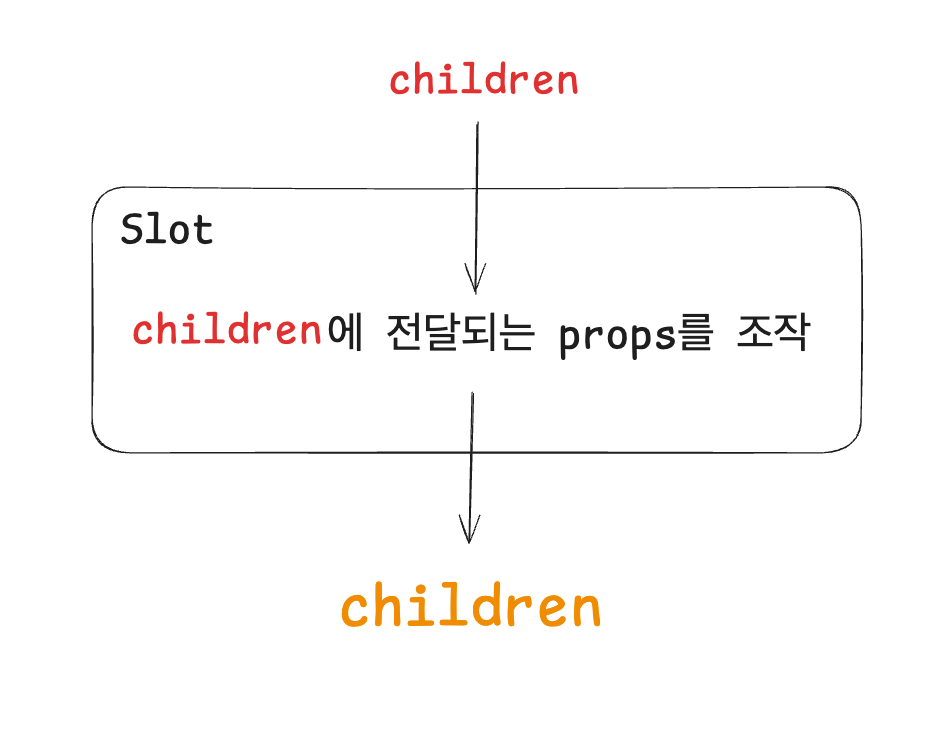
const Slot = forwardRef((props, slotRef) => {
const { children, ...slotProps } = props;
const childrenProps = children.props;
const composedRefs = slotRef
? composeRefs(slotRef, childrenProps.ref)
: childrenProps.ref;
return React.cloneElement(children, {
...mergeProps(slotProps, childrenProps),
ref: composedRefs,
})
})
Slot이 합성하는 prop의 종류
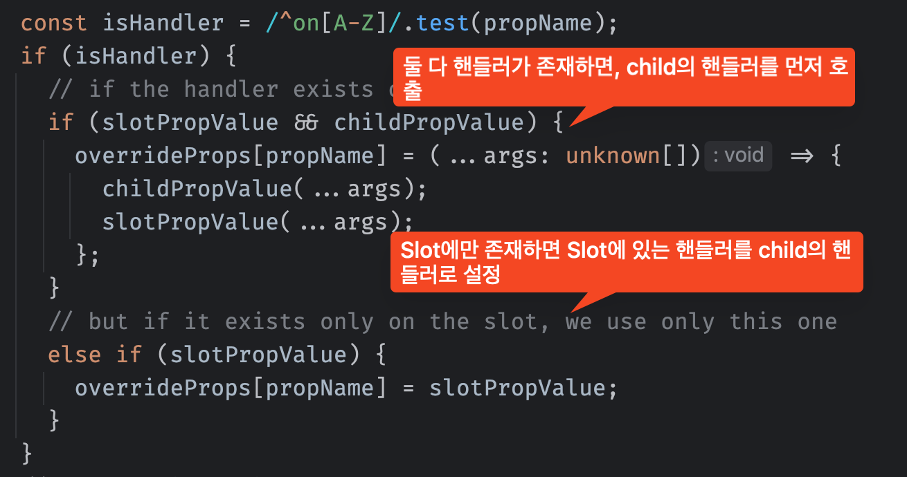
Slot이 합성하는 prop의 종류
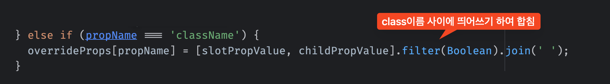
Slot이 합성하는 prop의 종류
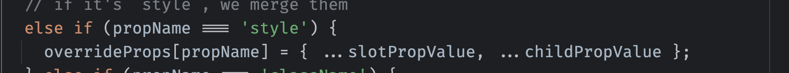
Slot이 합성하는 prop의 종류
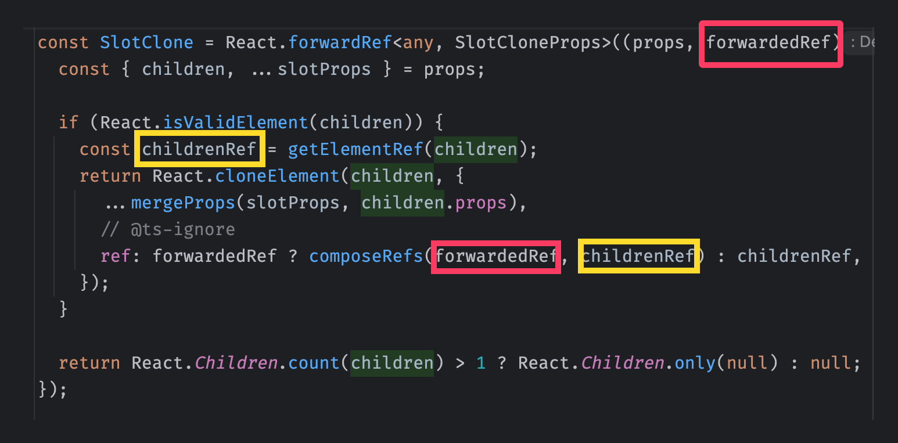
그 외의 props는 오버라이드
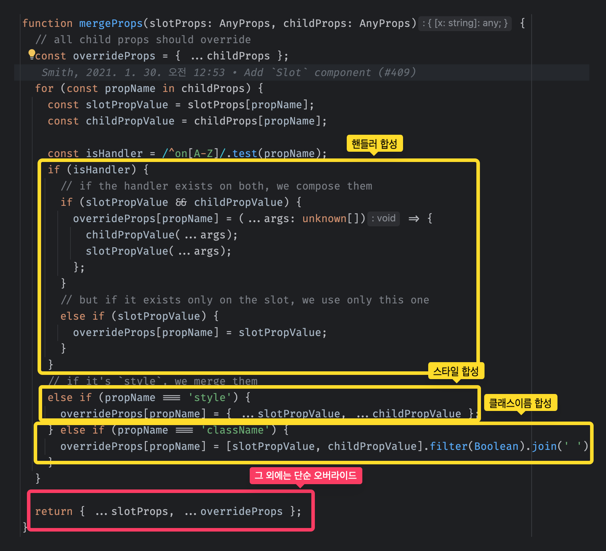
Slot 활용
asChild 패턴
컴포넌트를 다형적으로 사용할 수 있게
엘리먼트 타입을 변경할 수 있는 prop을 제공
const Button = ({ asChild, ...props }) => {
const Comp = asChild ? Slot : 'button';
return (
<Comp {...props} className="button" />
)
}
const App = () => {
return (
<>
<Button>버튼</Button>
<Button asChild>
<a href="...">
링크 버튼
</a>
</Button>
</>
)
}
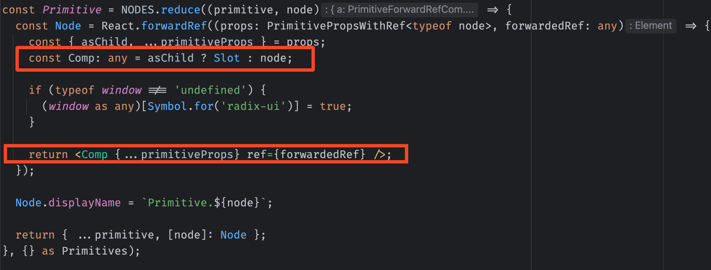
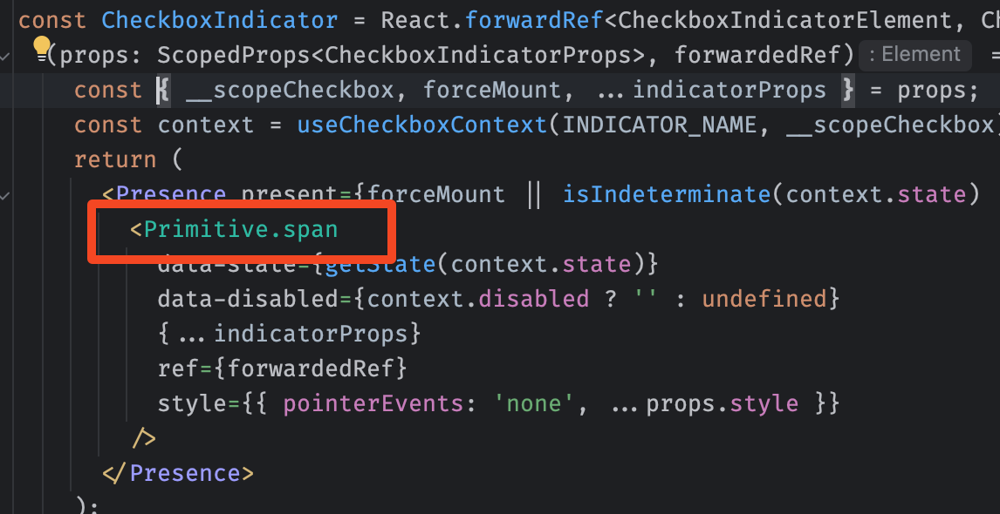
주의사항
children은 한개만 가능
// 정상 동작
<>
<Slot>
<Child />
</Slot>
</>
// 오류 발생함
<>
<Slot>
<Child />
<Child />
<Child />
</Slot>
</>
Slottable
<>
<Slot>
<div>Prefix</div>
<Slottable>
<a>
<A_Children />
</a>
</Slottable>
<div>Suffix</div>
</Slot>
</>
<>
<a>
<div>Prefix</div>
<Slottable>
<A_Children />
</Slottable>
<div>Suffix</div>
</a>
</>
<>
<a>
<div>Prefix</div>
<A_Children />
<div>Suffix</div>
</a>
</>
Slot 활용: Collection
컬렉션 아이템들을 추적하기 위한 컴포넌트
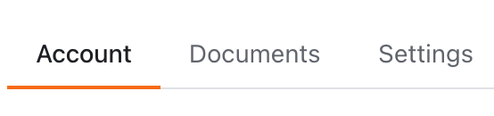
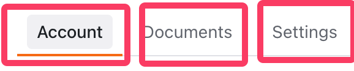
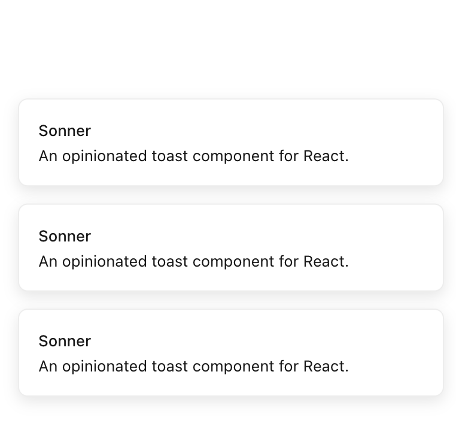
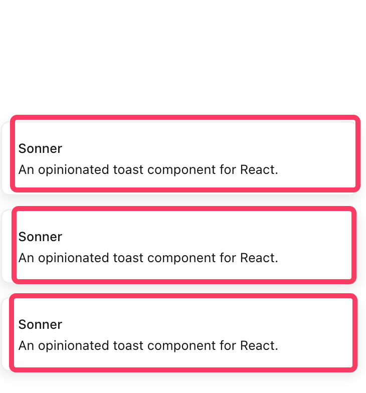
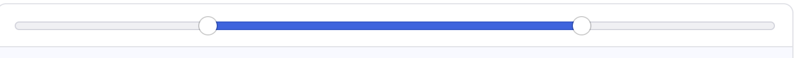
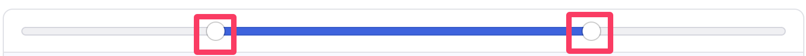
Slot 활용: Collection
Slot 활용: Collection
const ButtonItem = (props: {
children: ReactNode;
disabled: boolean;
value: string;
}) => {
return (
<button type="button" {...props}>
{chlidren}
</button>
)
}
const ButtonItem = (props: {
children: ReactNode;
disabled: boolean;
value: string;
}) => {
return (
<Collection.ItemSlot {...props}>
<button type="button">
{chlidren}
</button>
</Collection.ItemSlot>
)
}
Slot 활용: Collection
<>
<Collection.Provider>
<Collection.Slot>
<ul>
<ButtonItem disabled={true} value="1">..</ButtonItem>
<ButtonItem disabled={false} value="2">..</ButtonItem>
<ButtonItem disabled={false} value="3">..</ButtonItem>
<ButtonItem disabled={false} value="4">..</ButtonItem>
</ul>
</Collection.Slot>
<LogItems />
</Collection.Provider>
</>
const LogItems = () => {
const getItems = useCollection()
useEffect(() => {
console.log(getItems());
});
}
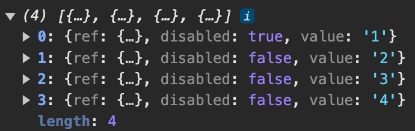
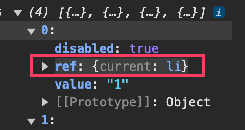
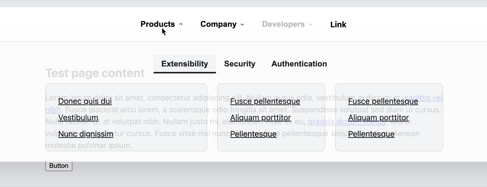
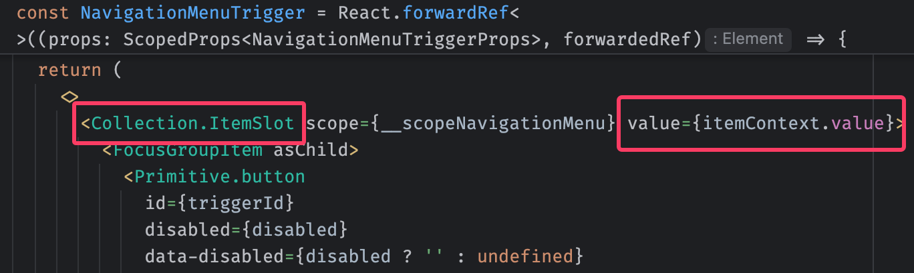
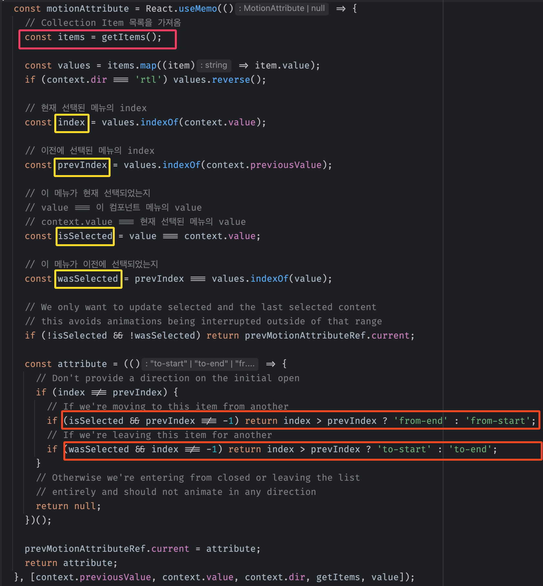
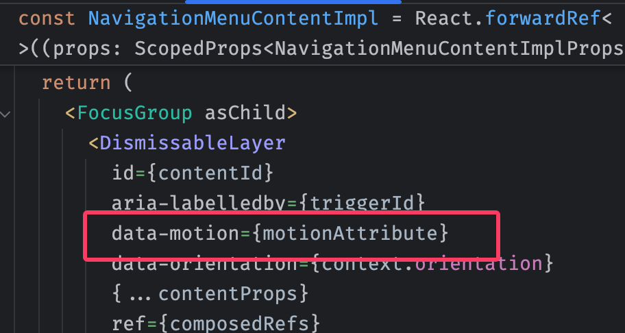
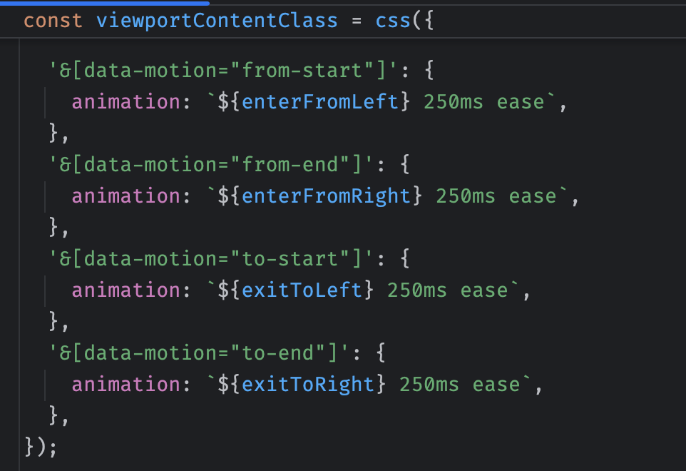